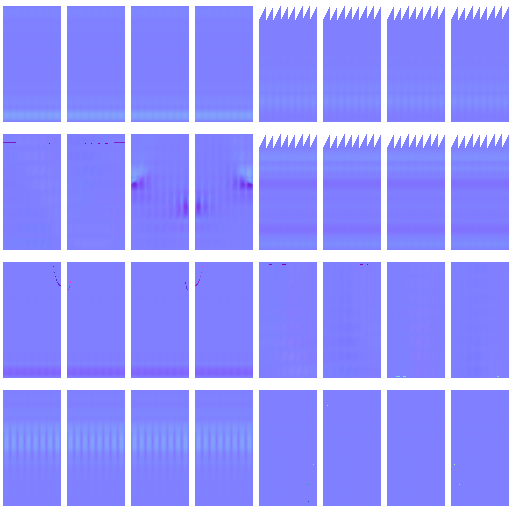
Tangent normal
normal
range 0.0103–1.0000
NaN 0 · invalid normals 0 · backward Z 0
CPU BVH projection, 64 visibility samples. 212048 hits / 0 misses / 32 charts. 92.5 seconds.
{
"allFinite": true,
"allNormalsUnit": true,
"fullProjectionCoverage": true,
"frontHemisphereNormals": true,
"bentDirectionInHighHemisphere": true
}These are actual exported maps—not illustrative swatches. IDs may appear almost black because their RGB bytes are data. Vertex color is white because the built-in mesh has no vertex colors.
Bent normals describe visibility, not bump geometry: 151 directions have negative low-frame Z, but all are in the projected high-normal hemisphere (minimum dot 0.0832). They were not falsely flipped/clamped. The open teapot cannot produce a guaranteed signed solid; see the separate SDF audit.
Download all 27 maps + metadata

normal
range 0.0103–1.0000
NaN 0 · invalid normals 0 · backward Z 0

world-normal
range 0.0000–1.0000
NaN 0 · invalid normals 0 · backward Z 0
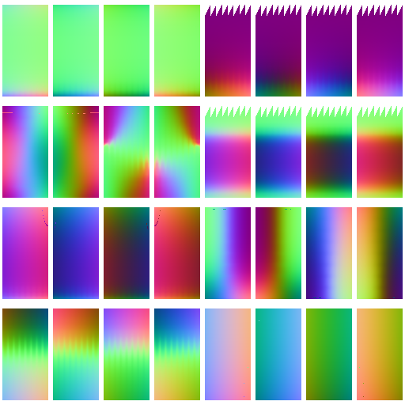
object-normal
range 0.0000–1.0000
NaN 0 · invalid normals 0 · backward Z 0
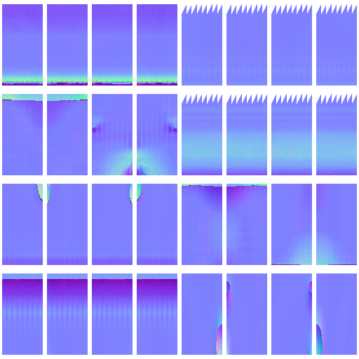
bent-normal
range 0.0108–1.0000
NaN 0 · invalid normals 0 · backward Z 151

bent-world-normal
range 0.0000–1.0000
NaN 0 · invalid normals 0 · backward Z 0
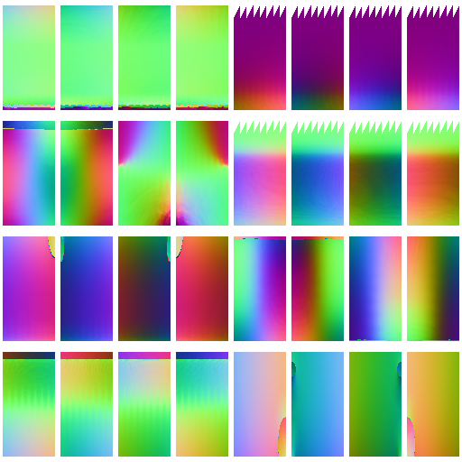
bent-object-normal
range 0.0000–1.0000
NaN 0 · invalid normals 0 · backward Z 0
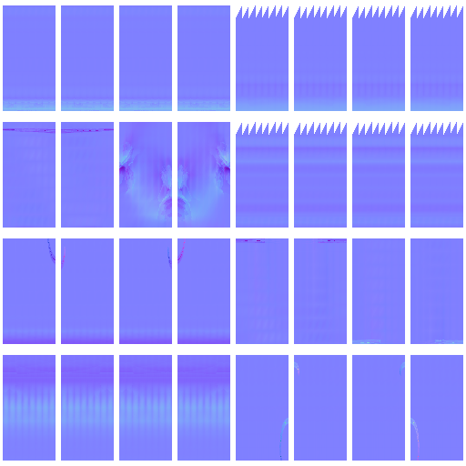
bevel-normal
range 0.0230–1.0000
NaN 0 · invalid normals 0 · backward Z 0
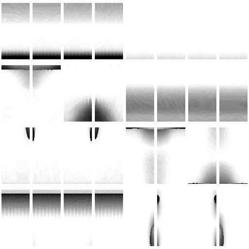
occlusion
range 0.0000–1.0000
NaN 0 · invalid normals 0 · backward Z 0
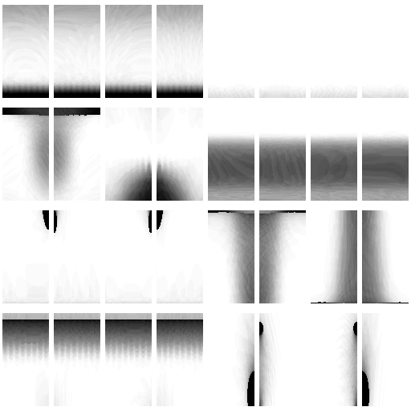
occlusion-secondary
range 0.0000–1.0000
NaN 0 · invalid normals 0 · backward Z 0
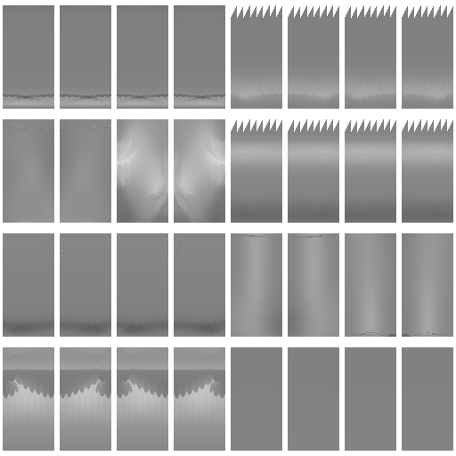
curvature
range 0.3701–0.8374
NaN 0 · invalid normals 0 · backward Z 0
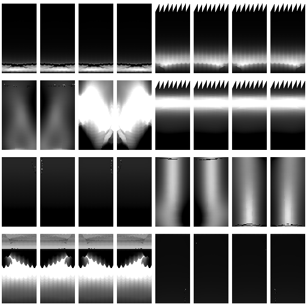
convexity
range 0.0000–1.0000
NaN 0 · invalid normals 0 · backward Z 0
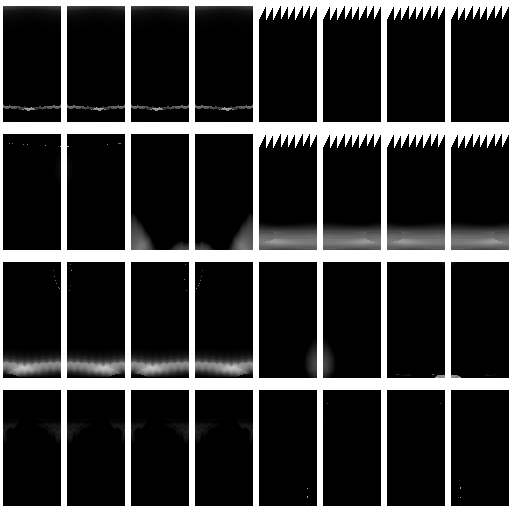
cavity
range 0.0000–0.7797
NaN 0 · invalid normals 0 · backward Z 0
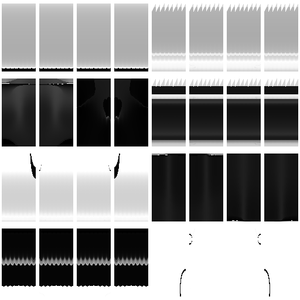
thickness
range 0.0000–1.0000
NaN 0 · invalid normals 0 · backward Z 0
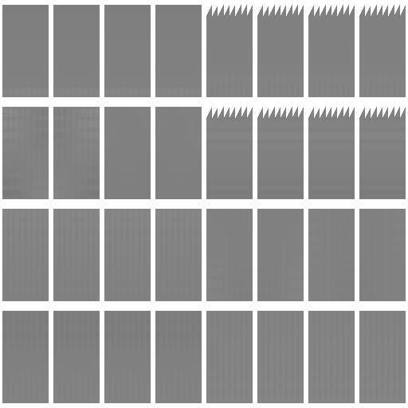
height
range 0.4645–0.5498
NaN 0 · invalid normals 0 · backward Z 0
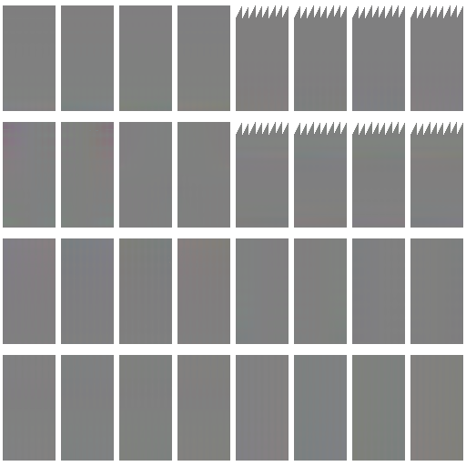
vector-displacement
range 0.4524–0.5323
NaN 0 · invalid normals 0 · backward Z 0
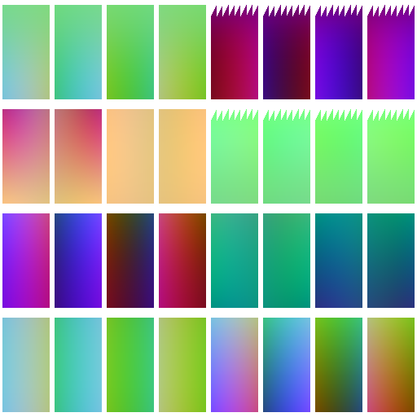
position
range 0.0000–0.9999
NaN 0 · invalid normals 0 · backward Z 0
id
range 0.0000–0.0039
NaN 0 · invalid normals 0 · backward Z 0
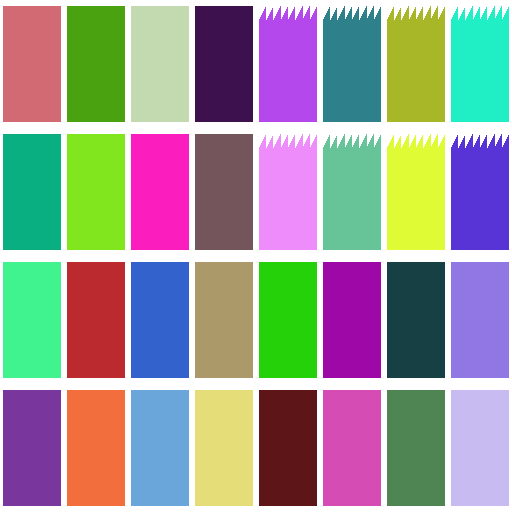
uv-island
range 0.0314–0.9843
NaN 0 · invalid normals 0 · backward Z 0
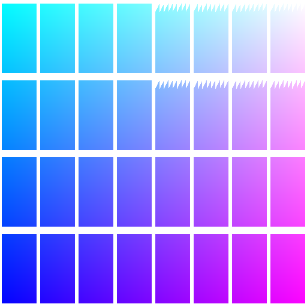
uv
range 0.0068–1.0000
NaN 0 · invalid normals 0 · backward Z 0
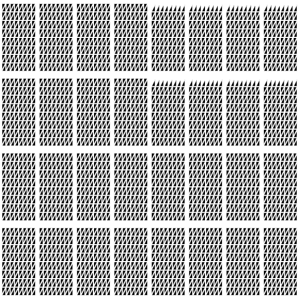
wireframe
range 0.0000–1.0000
NaN 0 · invalid normals 0 · backward Z 0
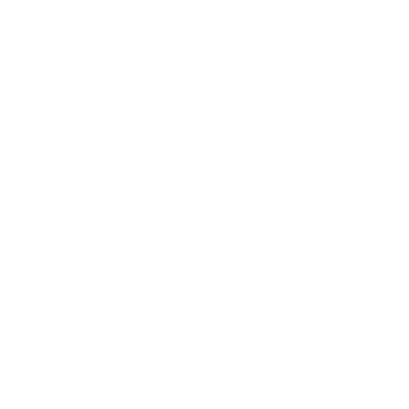
coverage
range 1.0000–1.0000
NaN 0 · invalid normals 0 · backward Z 0

alpha
range 1.0000–1.0000
NaN 0 · invalid normals 0 · backward Z 0
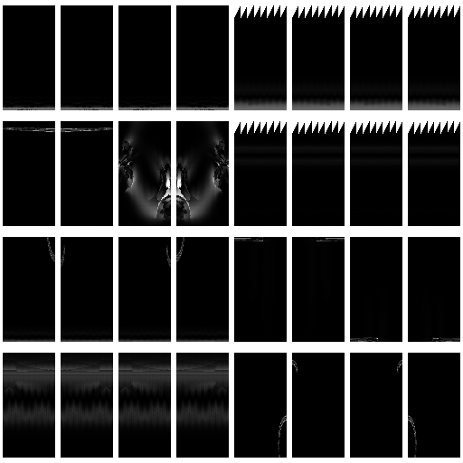
bevel-mask
range 0.0000–1.0000
NaN 0 · invalid normals 0 · backward Z 0
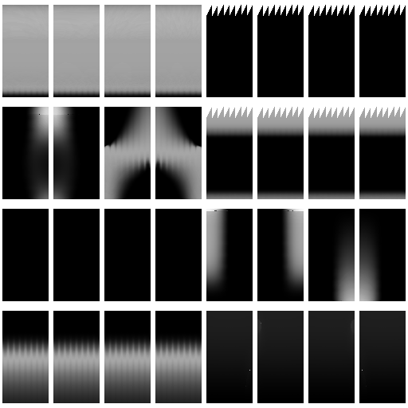
dust
range 0.0000–0.9724
NaN 0 · invalid normals 0 · backward Z 0
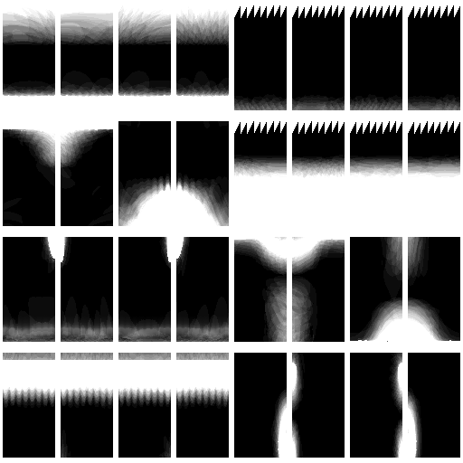
dirt
range 0.0000–1.0000
NaN 0 · invalid normals 0 · backward Z 0
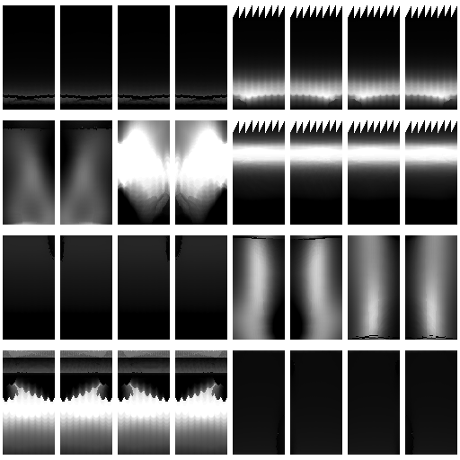
edge-wear
range 0.0000–1.0000
NaN 0 · invalid normals 0 · backward Z 0
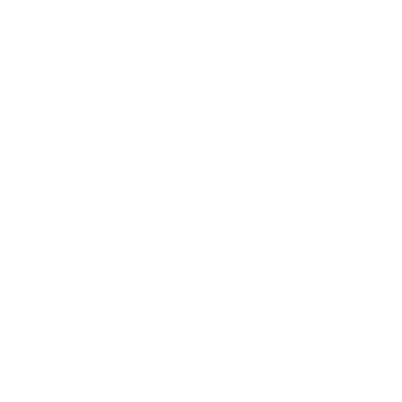
base-color
range 1.0000–1.0000
NaN 0 · invalid normals 0 · backward Z 0